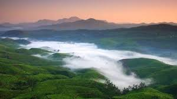
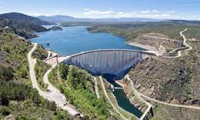
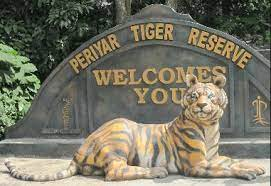

Idukki district is a densely forested, mountainous region in the south Indian state of Kerala. In the north, Anamudi mountain towers over Eravikulam National Park, where the rare, blue Neelakurinji flower blooms every 12 years. Nearby, Munnar is a hill station known for its sprawling tea plantations and Tea Museum. Farther south is the vast, curved Idukki Dam and Periyar National Park, a tiger and elephant reserve.

Munnar is a town in the Western Ghats mountain range in India’s Kerala state. A hill station and former resort for the British Raj elite, it's surrounded by rolling hills dotted with tea plantations established in the late 19th century. Eravikulam National Park, a habitat for the endangered mountain goat Nilgiri tahr, is home to the Lakkam Waterfalls, hiking trails and 2,695m-tall Anamudi Peak.
Located just about a kilometre from the Idukki city centre, the Hill View Park is set up approximately 350 feet from the Idukki dam. As the name suggests, Hill View Park is one such places in Idukki that offers spectacular views of the Cheruthoni and Idukki Dams.
The Periyar National Park in Thekkady, Kerala, is one of the most bio-diverse regions in the world and the best-protected reserve area that one can lay eyes on in India. Famous for its gorgeousness, greenery and stillness, the park is the dwelling place of abundant significant species, including the royal tigers and majestic elephants apart from other reptiles, fishes and birds. This National Park is an amazing coming together of nature, adventure and beauty. A place which allows you the peace and serenity you so desire, an opportunity to be one with nature and just a normal sighting of a Tiger or two, Periyar National Park is full of beautiful sights and sounds.
